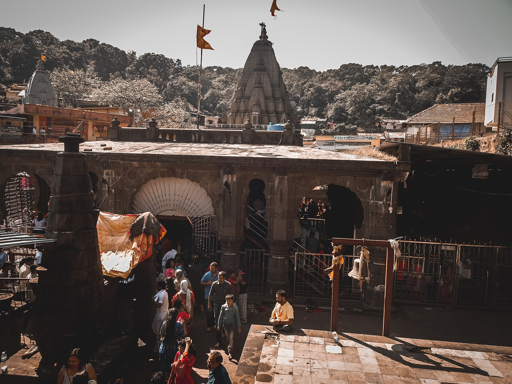

భారతదేశంలోని పవిత్ర ద్వాదశ జ్యోతిర్లింగాలలో ఆరవదిగా ప్రసిద్ధి చెందిన పుణ్యక్షేత్రం శ్రీ భీమశంకర జ్యోతిర్లింగం.
ఈ దివ్య ధామం మహారాష్ట్రలోని పశ్చిమ కనుమలు (సహ్యాద్రి పర్వత శ్రేణులు) నడుమ, పుణె జిల్లా ఖేడ్ తాలూకాలోని దట్టమైన అరణ్యాల మధ్య సముద్ర మట్టానికి సుమారు 3,250 అడుగుల ఎత్తులో వెలసి ఉంది. దక్షిణ భారతదేశపు పవిత్ర జీవనది అయిన భీమా నది (చంద్రభాగ) ఆవిర్భవించిన పుణ్యస్థలి కూడా ఇదే.
దట్టమైన పచ్చని కొండలు, జలపాతాలు, ఆధ్యాత్మిక వాతావరణం కలబోసిన భీమశంకరం పరమేశ్వరుని ఉగ్ర-శాంత రూపాల దివ్య కలయికగా భక్తులలో భక్తిప్రపత్తులను నింపుతుంది.
శ్రీ భీమశంకర జ్యోతిర్లింగ క్షేత్రం
ద్వాదశ జ్యోతిర్లింగ దివ్య క్షేత్రం • సహ్యాద్రి శ్రేణులు, పుణె, మహారాష్ట్ర

౧. పరిచయం
౨. క్షేత్ర ప్రాముఖ్యత — రక్షక స్వరూప భీమశంకరుడు
ద్వాదశ జ్యోతిర్లింగ స్తోత్రంలో జగద్గురు ఆదిశంకరాచార్యులు:
"డాకిన్యాం భీమశంకరం..." అని కొనియాడారు.
డాకినీ అరణ్య క్షేత్రంలో స్వయంభువుగా వెలసిన ఈ జ్యోతిర్లింగ దర్శనం శత్రుభయాలను, దుష్టగ్రహ పీడలను, అకాల మృత్యువును నివారిస్తుందని భక్తుల విశ్వాసం. గర్భగుడిలోని శివలింగం భూమట్టానికి కాస్త దిగువగా ఉండి, లింగం మధ్యభాగంలో ఒక సహజమైన గీత (విభజన రేఖ) కనిపిస్తుంది. దీనిని శివుడు మరియు పార్వతీదేవిల సంయుక్త అర్ధనారీశ్వర రూపంగా కొలుస్తారు.
"డాకిన్యాం భీమశంకరం..." అని కొనియాడారు.
డాకినీ అరణ్య క్షేత్రంలో స్వయంభువుగా వెలసిన ఈ జ్యోతిర్లింగ దర్శనం శత్రుభయాలను, దుష్టగ్రహ పీడలను, అకాల మృత్యువును నివారిస్తుందని భక్తుల విశ్వాసం. గర్భగుడిలోని శివలింగం భూమట్టానికి కాస్త దిగువగా ఉండి, లింగం మధ్యభాగంలో ఒక సహజమైన గీత (విభజన రేఖ) కనిపిస్తుంది. దీనిని శివుడు మరియు పార్వతీదేవిల సంయుక్త అర్ధనారీశ్వర రూపంగా కొలుస్తారు.
౩. క్షేత్ర పురాణ గాథ — భీమాసుర సంహారం
శివ పురాణంలోని కోటిరుద్ర సంహిత ప్రకారం, పూర్వం కుంభకర్ణుడికి మరియు కర్కటి అనే రాక్షసికి జన్మించిన కుమారుడే భీమాసురుడు.
యుక్తవయస్సు వచ్చాక తన తండ్రి కుంభకర్ణుడు శ్రీరాముని చేతిలో హతమయ్యాడని తెలుసుకున్న భీమాసురుడు దేవతలపై తీవ్ర ప్రతీకార జ్వాలతో రగిలిపోయాడు. బ్రహ్మదేవుని గురించి వేల సంవత్సరాలు ఘోర తపస్సు చేసి అపారమైన బలాన్ని, అజేయమైన వరాలను పొందాడు. ఆ గర్వంతో ఇంద్రాది దేవతలను స్వర్గం నుండి తరిమివేసి, కామరూప దేశపు పరమ శివభక్తుడైన సుదక్షిణ మహారాజును బంధించి కారాగారంలో బంధించాడు.
కారాగారంలో కూడా సుదక్షిణుడు మట్టితో శివలింగాన్ని ప్రతిష్ఠించి భక్తితో రుద్రాభిషేకం చేస్తూ శివారాధనలో లీనమయ్యాడు. ఇది చూసిన భీమాసురుడు ఆగ్రహంతో తన ఖడ్గంతో ఆ శివలింగాన్ని ఛేదించడానికి దూకాడు. సరిగ్గా అదే క్షణంలో ఆ లింగం నుండి పరమశివుడు ప్రచండ జ్వాలా స్వరూపంతో సాక్షాత్కరించాడు.
శివుడు తన హుంకారంతో, త్రినేత్ర జ్వాలలతో భీమాసురుడిని క్షణమాత్రంలో భస్మం చేశాడు. ఆ తీవ్ర సంగ్రామంలో పరమేశ్వరుని శరీరం నుండి వెలువడిన దివ్య స్వేద బిందువులే ప్రవాహమై పవిత్రమైన భీమా నదిగా ఆవిర్భవించాయి. భక్తులను రక్షించడానికి పరమశివుడు శాశ్వతంగా అక్కడ భీమశంకర జ్యోతిర్లింగంగా కొలువుదీరాడు.
యుక్తవయస్సు వచ్చాక తన తండ్రి కుంభకర్ణుడు శ్రీరాముని చేతిలో హతమయ్యాడని తెలుసుకున్న భీమాసురుడు దేవతలపై తీవ్ర ప్రతీకార జ్వాలతో రగిలిపోయాడు. బ్రహ్మదేవుని గురించి వేల సంవత్సరాలు ఘోర తపస్సు చేసి అపారమైన బలాన్ని, అజేయమైన వరాలను పొందాడు. ఆ గర్వంతో ఇంద్రాది దేవతలను స్వర్గం నుండి తరిమివేసి, కామరూప దేశపు పరమ శివభక్తుడైన సుదక్షిణ మహారాజును బంధించి కారాగారంలో బంధించాడు.
కారాగారంలో కూడా సుదక్షిణుడు మట్టితో శివలింగాన్ని ప్రతిష్ఠించి భక్తితో రుద్రాభిషేకం చేస్తూ శివారాధనలో లీనమయ్యాడు. ఇది చూసిన భీమాసురుడు ఆగ్రహంతో తన ఖడ్గంతో ఆ శివలింగాన్ని ఛేదించడానికి దూకాడు. సరిగ్గా అదే క్షణంలో ఆ లింగం నుండి పరమశివుడు ప్రచండ జ్వాలా స్వరూపంతో సాక్షాత్కరించాడు.
శివుడు తన హుంకారంతో, త్రినేత్ర జ్వాలలతో భీమాసురుడిని క్షణమాత్రంలో భస్మం చేశాడు. ఆ తీవ్ర సంగ్రామంలో పరమేశ్వరుని శరీరం నుండి వెలువడిన దివ్య స్వేద బిందువులే ప్రవాహమై పవిత్రమైన భీమా నదిగా ఆవిర్భవించాయి. భక్తులను రక్షించడానికి పరమశివుడు శాశ్వతంగా అక్కడ భీమశంకర జ్యోతిర్లింగంగా కొలువుదీరాడు.
౪. చారిత్రక నేపథ్యం & మరాఠా వైభవం
భీమశంకర ఆలయం ౧౩వ శతాబ్దానికి చెందిన ప్రాచీన నాగర నిర్మాణ శైలిని కలిగి ఉంది. ఆలయ మూల నిర్మాణం ప్రాచీనమైనది కాగా, మరాఠా సామ్రాజ్య కాలంలో ఈ ఆలయం విశేషమైన అభివృద్ధిని సాధించింది:
• నానా ఫడ్నవీస్ నిర్మాణాలు: 18వ శతాబ్దంలో పేష్వా ప్రధాన మంత్రి అయిన నానా ఫడ్నవీస్ ఆలయ ముఖమండపం, సభామండపం మరియు ఎత్తైన శిఖర నిర్మాణాన్ని అద్భుతంగా పునర్నిర్మించారు.
• చిమాజీ అప్పా కానుక (పోర్చుగీస్ గంట): వసాయి యుద్ధంలో పోర్చుగీసులపై సాధించిన విజయానికి జ్ఞాపకార్థంగా పేష్వా బాజీరావ్ సోదరుడు చిమాజీ అప్పా ఒక భారీ రోమన్ క్యాథలిక్ ఇత్తడి గంటను ఈ ఆలయానికి సమర్పించారు. అది నేటికీ ఆలయ ముఖద్వారం వద్ద దర్శనమిస్తుంది.
• ఛత్రపతి శివాజీ మహారాజు కూడా ఈ అటవీ క్షేత్రానికి విచ్చేసి స్వామివారిని దర్శించి విశేష పూజలు నిర్వహించినట్లు చారిత్రక ఆధారాలు ఉన్నాయి.
• నానా ఫడ్నవీస్ నిర్మాణాలు: 18వ శతాబ్దంలో పేష్వా ప్రధాన మంత్రి అయిన నానా ఫడ్నవీస్ ఆలయ ముఖమండపం, సభామండపం మరియు ఎత్తైన శిఖర నిర్మాణాన్ని అద్భుతంగా పునర్నిర్మించారు.
• చిమాజీ అప్పా కానుక (పోర్చుగీస్ గంట): వసాయి యుద్ధంలో పోర్చుగీసులపై సాధించిన విజయానికి జ్ఞాపకార్థంగా పేష్వా బాజీరావ్ సోదరుడు చిమాజీ అప్పా ఒక భారీ రోమన్ క్యాథలిక్ ఇత్తడి గంటను ఈ ఆలయానికి సమర్పించారు. అది నేటికీ ఆలయ ముఖద్వారం వద్ద దర్శనమిస్తుంది.
• ఛత్రపతి శివాజీ మహారాజు కూడా ఈ అటవీ క్షేత్రానికి విచ్చేసి స్వామివారిని దర్శించి విశేష పూజలు నిర్వహించినట్లు చారిత్రక ఆధారాలు ఉన్నాయి.
౫. ఆలయ నిర్మాణ విశేషాలు
• నల్లరాతి శిల్పకళ: ఆలయం పూర్తిగా సహ్యాద్రి పర్వతాల నల్లరాతితో నిర్మించబడింది. స్తంభాలపై రామాయణం, మహాభారతం, శివలీలల ఘట్టాలు అత్యంత విలక్షణంగా చెక్కబడ్డాయి.
• గర్భగుడి నిర్మాణం: గర్భాలయం నేలమట్టానికంటే దిగువన ఉంటుంది. గర్భగుడిలో నిరంతరం జలధారలు ఊరుతూ శివలింగాన్ని అభిషేకిస్తూ ఉంటాయి.
• నాగర & హేమాడ్పంతి శైలుల మేళవింపు: ఆలయ శిఖరం మధ్యయుగపు నాగర శిల్పకళను ప్రతిబింబించగా, ఆలయ పునాది ప్రాచీన హేమాడ్పంతి శైలిలో నిర్మించబడింది.
• గర్భగుడి నిర్మాణం: గర్భాలయం నేలమట్టానికంటే దిగువన ఉంటుంది. గర్భగుడిలో నిరంతరం జలధారలు ఊరుతూ శివలింగాన్ని అభిషేకిస్తూ ఉంటాయి.
• నాగర & హేమాడ్పంతి శైలుల మేళవింపు: ఆలయ శిఖరం మధ్యయుగపు నాగర శిల్పకళను ప్రతిబింబించగా, ఆలయ పునాది ప్రాచీన హేమాడ్పంతి శైలిలో నిర్మించబడింది.
౬. పరిసర ముఖ్య దర్శనీయ స్థలాలు
• భీమశంకర జ్యోతిర్లింగం: స్వయంభూ శైవ మూల మందిరం.
• భీమా నదీ ఉద్భవ స్థానం: ఆలయానికి సమీపంలోనే సహ్యాద్రి కొండల నుండి భీమా నది పుట్టి ప్రవహిస్తుంది.
• మోక్షకుండ తీర్థం: మహర్షి కౌశికుడు తపస్సు చేసిన పవిత్ర తీర్థం. ఇందులో స్నానమాచరిస్తే పాపవిముక్తి కలుగుతుందని ప్రతీతి.
• గుప్త భీమశంకరం: దట్టమైన అటవీ లోయల మధ్య, జలపాతం వెనుక దాగి ఉండే ప్రాచీన శివలింగం. సాహస యాత్రికులకు ఇది అద్భుత ఆధ్యాత్మిక ప్రదేశం.
• కమలజా దేవి ఆలయం: త్రిపురాసుర సంహార సమయంలో శివునికి సహాయంగా నిలిచిన కమలజా (పార్వతీ) దేవికి అంకితమైన పవిత్ర సన్నిధి.
• భీమశంకర వన్యప్రాణి అభయారణ్యం: అంతరించిపోతున్న అరుదైన మహారాష్ట్ర రాష్ట్ర జంతువైన మలబార్ జెయింట్ స్క్విరెల్ (శేఖరూ) నివసించే అంతర్జాతీయ గుర్తింపు పొందిన దట్టమైన సతతహరిత అరణ్యం.
• భీమా నదీ ఉద్భవ స్థానం: ఆలయానికి సమీపంలోనే సహ్యాద్రి కొండల నుండి భీమా నది పుట్టి ప్రవహిస్తుంది.
• మోక్షకుండ తీర్థం: మహర్షి కౌశికుడు తపస్సు చేసిన పవిత్ర తీర్థం. ఇందులో స్నానమాచరిస్తే పాపవిముక్తి కలుగుతుందని ప్రతీతి.
• గుప్త భీమశంకరం: దట్టమైన అటవీ లోయల మధ్య, జలపాతం వెనుక దాగి ఉండే ప్రాచీన శివలింగం. సాహస యాత్రికులకు ఇది అద్భుత ఆధ్యాత్మిక ప్రదేశం.
• కమలజా దేవి ఆలయం: త్రిపురాసుర సంహార సమయంలో శివునికి సహాయంగా నిలిచిన కమలజా (పార్వతీ) దేవికి అంకితమైన పవిత్ర సన్నిధి.
• భీమశంకర వన్యప్రాణి అభయారణ్యం: అంతరించిపోతున్న అరుదైన మహారాష్ట్ర రాష్ట్ర జంతువైన మలబార్ జెయింట్ స్క్విరెల్ (శేఖరూ) నివసించే అంతర్జాతీయ గుర్తింపు పొందిన దట్టమైన సతతహరిత అరణ్యం.
౭. నిత్య పూజలు & ముఖ్య ఉత్సవాలు
• నిత్య పూజా విధులు: ఉదయం 4:30 గంటలకు కాకడ ఆరతితో ఆలయం తెరుచుకుంటుంది. అనంతరం పంచామృత అభిషేకం, మహానివేదన, సాయంత్రం శృంగార ఆరతి మరియు రాత్రి శయన ఆరతి జరుగుతాయి.
• మహాశివరాత్రి బ్రహ్మోత్సవాలు: ఈ పర్వదినాన ఐదు రోజుల పాటు అఖండ భజనలు, రుద్రాభిషేకాలు మరియు రథోత్సవాలు అత్యంత వైభవోపేతంగా సాగుతాయి.
• శ్రావణ మాసం: సహ్యాద్రి కొండలు వర్షపు మేఘాలతో, పచ్చదనంతో పులకించే శ్రావణ సోమవారాల్లో వేలాదిగా భక్తులు పాదయాత్రలు చేస్తూ స్వామిని దర్శించుకుంటారు.
• కార్తీక పూర్ణిమ: దీపోత్సవం మరియు త్రిపురారి పూర్ణిమ వేడుకలు ఘనంగా జరుగుతాయి.
• మహాశివరాత్రి బ్రహ్మోత్సవాలు: ఈ పర్వదినాన ఐదు రోజుల పాటు అఖండ భజనలు, రుద్రాభిషేకాలు మరియు రథోత్సవాలు అత్యంత వైభవోపేతంగా సాగుతాయి.
• శ్రావణ మాసం: సహ్యాద్రి కొండలు వర్షపు మేఘాలతో, పచ్చదనంతో పులకించే శ్రావణ సోమవారాల్లో వేలాదిగా భక్తులు పాదయాత్రలు చేస్తూ స్వామిని దర్శించుకుంటారు.
• కార్తీక పూర్ణిమ: దీపోత్సవం మరియు త్రిపురారి పూర్ణిమ వేడుకలు ఘనంగా జరుగుతాయి.
౮. ఆసక్తికర విషయాలు
• స్వయంభూ జ్యోతిర్లింగ జలధార: భీమశంకర లింగం ఎల్లప్పుడూ చల్లని ప్రాకృతిక నీటి ఊటతో తడిసి ఉంటుంది.
• రెండు నదుల సంగమం: భీమా నది పండరీపురంలో విఠలుని పాదాలను తాకుతూ ప్రవహించే ప్రసిద్ధ 'చంద్రభాగ'గా మారుతుంది. ఆ నది జన్మస్థానమే ఈ భీమశంకర క్షేత్రం.
• సహ్యాద్రి పర్యావరణ స్వర్గం: వర్షాకాలంలో ఆలయ పరిసరాలు మేఘాల ముసుగులో, వందలాది జలపాతాలతో దైవిక సౌందర్యంతో కనువిందు చేస్తాయి.
• రెండు నదుల సంగమం: భీమా నది పండరీపురంలో విఠలుని పాదాలను తాకుతూ ప్రవహించే ప్రసిద్ధ 'చంద్రభాగ'గా మారుతుంది. ఆ నది జన్మస్థానమే ఈ భీమశంకర క్షేత్రం.
• సహ్యాద్రి పర్యావరణ స్వర్గం: వర్షాకాలంలో ఆలయ పరిసరాలు మేఘాల ముసుగులో, వందలాది జలపాతాలతో దైవిక సౌందర్యంతో కనువిందు చేస్తాయి.
౯. యాత్రికులకు సమాచారం & రవాణా సౌకర్యాలు
భౌగోళిక స్థానం: భీమశంకర, ఖేడ్ తాలూకా, పుణె జిల్లా, మహారాష్ట్ర (పిన్ కోడ్: 410509).
చేరుకునే మార్గాలు:
• విమాన మార్గం: పుణె అంతర్జాతీయ విమానాశ్రయం (PNQ) సమీప విమానాశ్రయం (సుమారు 110 కి.మీ). ముంబై ఛత్రపతి శివాజీ విమానాశ్రయం నుండి సుమారు 220 కి.మీ.
• రైలు మార్గం: పుణె జంక్షన్ (సుమారు 110 కి.మీ) దేశంలోని అన్ని ప్రధాన నగరాలతో కలుపబడి ఉంది. సమీప లోకల్ స్టేషన్ మంచర్/రాజ్గురునగర్.
• రోడ్డు మార్గం: పుణె (శివాజీనగర్ బస్ స్టాండ్) నుండి భీమశంకరానికి నేరుగా MSRTC బస్సులు, ప్రైవేట్ ట్యాక్సీలు అందుబాటులో ఉంటాయి. ముంబై నుండి కళ్యాణ్–జున్నార్ లేదా ఖేడ్ మార్గంలో చేరుకోవచ్చు.
చేరుకునే మార్గాలు:
• విమాన మార్గం: పుణె అంతర్జాతీయ విమానాశ్రయం (PNQ) సమీప విమానాశ్రయం (సుమారు 110 కి.మీ). ముంబై ఛత్రపతి శివాజీ విమానాశ్రయం నుండి సుమారు 220 కి.మీ.
• రైలు మార్గం: పుణె జంక్షన్ (సుమారు 110 కి.మీ) దేశంలోని అన్ని ప్రధాన నగరాలతో కలుపబడి ఉంది. సమీప లోకల్ స్టేషన్ మంచర్/రాజ్గురునగర్.
• రోడ్డు మార్గం: పుణె (శివాజీనగర్ బస్ స్టాండ్) నుండి భీమశంకరానికి నేరుగా MSRTC బస్సులు, ప్రైవేట్ ట్యాక్సీలు అందుబాటులో ఉంటాయి. ముంబై నుండి కళ్యాణ్–జున్నార్ లేదా ఖేడ్ మార్గంలో చేరుకోవచ్చు.
౧౦. దర్శన వేళలు & అధికారిక సమాచారం
దర్శన సమయాలు: ఉదయం 4:30 నుండి రాత్రి 9:30 వరకు (మధ్యాహ్న నైవేద్య సమయం మినహా).
అధికారిక వెబ్సైట్లు & సమాచారం:
• శ్రీ భీమశంకర సంస్థాన్ దేవస్థాన ట్రస్ట్ (bhimashankar.in)
• మహారాష్ట్ర పర్యాటక అభివృద్ధి సంస్థ (MTDC)
అధికారిక వెబ్సైట్లు & సమాచారం:
• శ్రీ భీమశంకర సంస్థాన్ దేవస్థాన ట్రస్ట్ (bhimashankar.in)
• మహారాష్ట్ర పర్యాటక అభివృద్ధి సంస్థ (MTDC)
౧౧. ఆధార గ్రంథాలు
• శివ పురాణం — కోటిరుద్ర సంహిత (భీమశంకర జ్యోతిర్లింగ ప్రాదుర్భావ అధ్యాయం)
• జగద్గురు ఆదిశంకరాచార్య ద్వాదశ జ్యోతిర్లింగ స్తోత్రం
• స్కంద పురాణం — సహ్యాద్రి ఖండం
• భారత పురావస్తు శాఖ (ASI) మరియు మహారాష్ట్ర పర్యాటక రికార్డులు
• జగద్గురు ఆదిశంకరాచార్య ద్వాదశ జ్యోతిర్లింగ స్తోత్రం
• స్కంద పురాణం — సహ్యాద్రి ఖండం
• భారత పురావస్తు శాఖ (ASI) మరియు మహారాష్ట్ర పర్యాటక రికార్డులు
౧౨. ముగింపు
సహ్యాద్రి పర్వతాల ఒడిలో భీమా నదీ పావన ధారల నడుమ వెలసిన శ్రీ భీమశంకర జ్యోతిర్లింగం సమస్త భయాలను పటాపంచలు చేసి, అంతరంగంలో నిర్భయత్వాన్ని, ప్రశాంతతను నింపే పరమేశ్వరుని కరుణా నిలయం.
భీమాసురుని గర్వాన్ని అణచి ధర్మాన్ని నిలిపిన స్వామిని భక్తితో ఆరాధిస్తే సకల పాపాలు హరించి ఆయురారోగ్యాలు, మోక్ష ప్రాప్తి కలుగుతాయి.
"ఓం నమః శంభవే చ మయోభవే చ నమః శంకరాయ చ మయస్కరాయ చ నమః శివాయ చ శివతరాయ చ • ఓం నమః శివాయ!"
భీమాసురుని గర్వాన్ని అణచి ధర్మాన్ని నిలిపిన స్వామిని భక్తితో ఆరాధిస్తే సకల పాపాలు హరించి ఆయురారోగ్యాలు, మోక్ష ప్రాప్తి కలుగుతాయి.
"ఓం నమః శంభవే చ మయోభవే చ నమః శంకరాయ చ మయస్కరాయ చ నమః శివాయ చ శివతరాయ చ • ఓం నమః శివాయ!"
✦ సర్వే జనాః సుఖినో భవంతు • ఓం భీమశంకరాయ నమః ✦